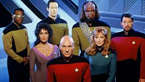
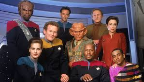

Star Trek Series
There have been 5 different Star Trek series on tv thus far. A 6th is schedule next year on CBS. The series thus far include Star Trek, Star Trek: The Next Generation, Star Trek: Deep Space Nine, Star Trek: Voyager, and Star Trek: Enterprise. Six movies were made featuring the cast of The Original Series, and four movies were made with the cast of The Next Generation. In addition, there have been 3 more recent "reboot" movies with different, younger actors playing the characters from The Original Series in an altered timeline. My two favorite series were The Next Generation and Deep Space Nine, which I will discuss below. You can visit their individual pages by clicking the links above.
Star Trek: The Next Generation
JQuery Features Used
- Accordian widget
- Cycle 2 slide show
Star Trek: The Next Generation features a new Enterprise under the command of Jean- Luc Picard. The Federation is a large and advanced Utopia with Earth as its central paradise. The Next Generation features mostly stand-alone episodes without a highly complex storyline or intricate continuity. The show's humanist moral vision is by far the most pronounced of all the series, with Picard often giving a powerful moral speech to frame a problem. This cheery utopian optimism is fairly unique in science fiction.
Star Trek: Deep Space Nine
JQuery Features Used
- Tabs widget
- Lightbox plugin
Commander Ben Sisko reluctantly takes command of Deep Space Nine after the brutal Cardassians withdraw from Bajor. His mission is to shepherd Bajor into being ready for Federation membership. Star Trek: Deep Space Nine is the only Star Trek series to take place mostly on a stationary setting. This allowed for more complicated plot lines and a rich continuity between episodes. The series explores darker moral themes and war in a way that is unusual for Star Trek. Deep Space Nine was a solid, but lesser known Star Trek series.